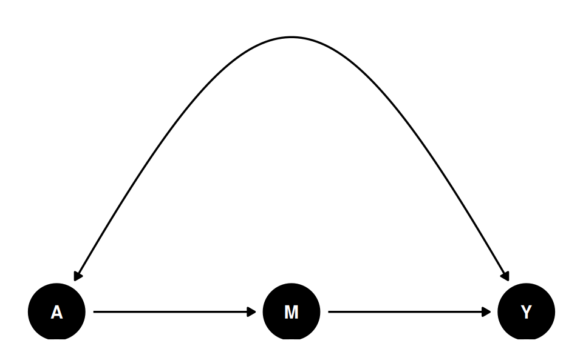
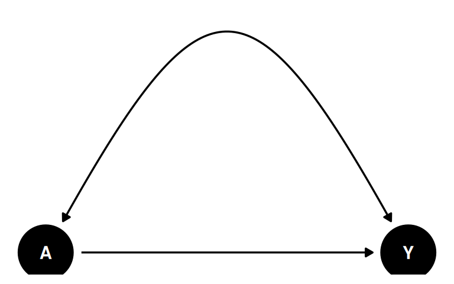

3 DAGs, ADMGs, Identification, and Estimation
The potential-outcomes chapter asked when an observed data set can tell us about \(E[Y(1)-Y(0)]\). Graphs give one way to state the assumptions behind the answer. A graph records which variables are allowed to cause other variables, and whether some observed variables may share unobserved common causes. Once the graph is stated, identification is a graph problem. Estimation comes after that: estimate the functional that the graph identified.
I use dagitty for graphs and backdoor adjustment, causaleffect for the general Pearl-Shpitser ID algorithm, and small direct estimators for the examples. The goal is to keep the order clear: graph first, identified functional second, estimator third.
3.1 DAGs and ADMGs
A directed acyclic graph, or DAG, has directed arrows such as X -> A. In causal work, an arrow means a direct causal relation is allowed by the model. Absence of an arrow is also a substantive assumption.
An acyclic directed mixed graph, or ADMG, adds bidirected arrows such as A <-> Y. A bidirected edge represents an unobserved common cause. This is useful because many econometric applications have variables we cannot measure: ability, preferences, latent health, firm quality, and so on.
The graph is not an estimator. It is a compact statement of assumptions. The workflow is:
- write down a DAG or ADMG;
- ask whether the target effect is identified;
- estimate the identified functional from data.
3.2 A DAG: Backdoor Adjustment
Start with a simple observational study. A is treatment, Y is the outcome, and X is an observed confounder:
Code
ggdag(g_dag) + theme_dag_blank()
The graph says X affects both treatment and outcome. It also says there is no unobserved common cause between A and Y after we condition on X. In this case the treatment effect is identifiable by backdoor adjustment.
Code
adj_sets <- adjustmentSets(g_dag, exposure = "A", outcome = "Y")
adj_sets{ X }The adjustment set is \(\{X\}\). Under this graph,
\[ E[Y(a)] = E_X\{E(Y \mid A=a, X)\}. \tag{3.1}\]
So the graph has translated a causal query into an observed-data functional.
3.3 Estimating the DAG Effect with AIPW
We simulate data that match this graph, so we can check whether an estimator built from the identified functional recovers an effect we already know.
We draw \(n = 400\) observations. The confounder is \(X \sim N(0,1)\). Treatment is \(A \sim \text{Bernoulli}(\Lambda(-0.2 + 0.8X))\), with \(\Lambda\) the logistic function, so a higher \(X\) makes treatment more likely. The outcome is \(Y = 1 + 1.5A + 0.7X + 0.3\varepsilon\) with \(\varepsilon \sim N(0,1)\). The effect is constant across units, so the ACE is 1.5.
Code
set.seed(2026)
logistic <- function(x) 1 / (1 + exp(-x))
n <- 400
X <- rnorm(n)
pA <- logistic(-0.2 + 0.8 * X)
A <- as.numeric(runif(n) < pA)
Y <- 1 + 1.5 * A + 0.7 * X + 0.3 * rnorm(n)
df_dag <- data.frame(X = X, A = A, Y = Y)
head(df_dag) X A Y
1 0.52058907 0 1.6530538
2 -1.07969076 0 0.1907760
3 0.13923812 0 1.0984536
4 -0.08474878 0 1.0941604
5 -0.66663962 1 1.8965341
6 -2.51608903 0 -0.8245336The analyst sees only \(X\), \(A\) and \(Y\). Because \(X\) raises both the chance of treatment and the outcome, a raw contrast of \(Y\) by \(A\) overstates the effect.
Because the graph is backdoor-identified, use AIPW with the adjustment set the graph chose. The function below implements the AIPW point estimate and an EIF-based standard error.
Code
aipw_backdoor <- function(data, treatment, outcome, adjust) {
fmla_y <- as.formula(paste0(outcome, " ~ ", treatment, " * (",
paste(adjust, collapse = " + "), ")"))
fmla_a <- as.formula(paste0(treatment, " ~ ",
paste(adjust, collapse = " + ")))
mu_fit <- lm(fmla_y, data = data)
pi_fit <- glm(fmla_a, data = data, family = binomial())
d1 <- data; d1[[treatment]] <- 1
d0 <- data; d0[[treatment]] <- 0
mu1 <- predict(mu_fit, newdata = d1)
mu0 <- predict(mu_fit, newdata = d0)
pi1 <- predict(pi_fit, newdata = data, type = "response")
w <- data[[treatment]]; y <- data[[outcome]]
if1 <- w * (y - mu1) / pi1 + mu1
if0 <- (1-w) * (y - mu0) / (1 - pi1) + mu0
psi <- if1 - if0
est <- mean(psi)
se <- sd(psi) / sqrt(length(psi))
ci <- est + c(-1, 1) * qnorm(0.975) * se
data.frame(estimand = "Backdoor ACE",
estimate = round(est, 4),
lower_95 = round(ci[1], 4),
upper_95 = round(ci[2], 4),
se = round(se, 4))
}
aipw_backdoor(df_dag, "A", "Y", adjust = "X") |> kable()| estimand | estimate | lower_95 | upper_95 | se |
|---|---|---|---|---|
| Backdoor ACE | 1.4886 | 1.427 | 1.5502 | 0.0314 |
AIPW returns 1.4886 with an influence-function standard error of 0.0314, and the 95% interval \([1.427, 1.550]\) covers the true ACE of 1.5. The graph chose the adjustment set and the estimator used that set.
The standard error here, sd(psi) / sqrt(n), is the influence-function standard error of the AIPW estimator. It is asymptotically valid when the nuisance functions (\(\mu\) and \(\pi\)) are regular parametric fits, as they are here. With flexible machine-learning nuisances it is not valid as written: you then need cross-fitting (sample splitting) so the nuisance estimates are independent of the fold being evaluated, and the variance should still be computed from the efficient influence function (or by bootstrap). Treating a full-sample ML AIPW estimate with this plug-in SE will generally understate uncertainty.
3.4 An ADMG: Front-Door Identification
Now suppose treatment and outcome share an unobserved common cause. A simple adjustment argument no longer works. The front-door ADMG has a mediator M that transmits the effect of A to Y, while A and Y are hidden-confounded:
Code
ggdag(g_fd) + theme_dag_blank()
The bidirected edge A <-> Y means that ordinary backdoor adjustment is not available. Indeed dagitty reports no adjustment set:
Code
Valid backdoor adjustment sets: 0 There are none. No set of observed variables blocks the confounding, because the confounder is not observed.
But the effect is still identified by the front-door criterion (Pearl, 1995). I call the Pearl-Shpitser ID algorithm in causaleffect to obtain the symbolic expression. The function wants the graph as an igraph object with bidirected edges encoded as two directed edges marked description = "U":
Code
g_fd_ig <- graph_from_literal(A -+ M, M -+ Y, A -+ Y, Y -+ A)
# Mark the A<->Y bidirected edge (encoded as the two directed edges A->Y and
# Y->A) by endpoint name rather than by hardcoded edge index -- igraph's
# internal edge ordering after graph_from_literal() is not part of its
# documented contract, so indices like c(2, 4) can silently point at the
# wrong edges if igraph's internals, the vertex/edge creation order, or the
# package version ever changes.
edge_ends <- ends(g_fd_ig, E(g_fd_ig))
confounded <- (edge_ends[, 1] == "A" & edge_ends[, 2] == "Y") |
(edge_ends[, 1] == "Y" & edge_ends[, 2] == "A")
E(g_fd_ig)$description[confounded] <- "U"
expr_fd <- causal.effect(y = "Y", x = "A", G = g_fd_ig, simp = TRUE)
cat(expr_fd, "\n")\sum_{M}P(M|A)\left(\sum_{A}P(Y|A,M)P(A)\right) The expression \(\sum_M P(M\mid A)\sum_{A'} P(Y\mid A', M) P(A')\) is precisely the front-door formula.
3.5 Estimating the ADMG Effect with the Front-Door Formula
We simulate a front-door setting so we can compare the front-door estimate against a truth we derive below.
We draw \(n = 400\) observations. The latent confounder is \(U \sim N(0,1)\). Treatment is \(A \sim \text{Bernoulli}(\Lambda(-0.1 + 0.8U))\), the mediator is \(M \sim \text{Bernoulli}(\Lambda(-0.4 + 1.2A))\), and the outcome is \(Y \sim \text{Bernoulli}(\Lambda(-1.0 + 0.9M + 0.7U))\). All three observed variables are binary. \(U\) is not in the observed data; it is what the bidirected edge A <-> Y stands for. Two features make the front-door criterion apply: \(U\) enters \(A\) and \(Y\) but not \(M\), and \(A\) reaches \(Y\) only through \(M\).
Code
set.seed(2027)
n <- 400
U <- rnorm(n)
A_fd <- as.numeric(runif(n) < logistic(-0.1 + 0.8 * U))
M <- as.numeric(runif(n) < logistic(-0.4 + 1.2 * A_fd))
Y_fd <- as.numeric(runif(n) < logistic(-1.0 + 0.9 * M + 0.7 * U))
df_fd <- data.frame(A = A_fd, M = M, Y = Y_fd)
head(df_fd) A M Y
1 0 0 0
2 0 1 1
3 1 1 1
4 1 1 1
5 0 1 1
6 1 0 0The front-door point estimator is a direct evaluation of the identification expression:
\[ E[Y(a)] = \sum_m P(M=m\mid A=a)\sum_{a'} P(Y=1\mid A=a', M=m) P(A=a'). \tag{3.2}\]
The DGP has a known truth. Under \(do(A=a)\) the mediator is \(M \sim \text{Bern}(\Lambda(-0.4 + 1.2a))\) while \(U\) keeps its marginal \(N(0,1)\) distribution, so
\[ \tau = \big[\Lambda(0.8) - \Lambda(-0.4)\big]\; \big[g(-0.1) - g(-1.0)\big], \qquad g(c) = E_U\big[\Lambda(c + 0.7U)\big], \tag{3.3}\]
which evaluates to \(0.2887 \times 0.1894 = 0.0547\). The naive contrast \(E[Y\mid A=1]-E[Y\mid A=0]\) equals \(0.158\) in the population this DGP defines — almost three times the causal effect, because \(U\) raises both the chance of treatment and the outcome. That gap is what the front-door step removes. The table below reports the sample version of the naive contrast alongside the front-door estimate.
For binary \(A\), \(M\), \(Y\) we plug sample proportions into that formula, and take the standard error from 500 bootstrap resamples:
Code
front_door_ace <- function(data) {
pA <- mean(data$A)
p_marginal_A <- c("0" = 1 - pA, "1" = pA)
# P(M | A): rows indexed by A, columns by M
pM_given_A <- prop.table(table(data$A, data$M), margin = 1)
# P(Y=1 | A, M)
pY_given_AM <- with(data, tapply(Y, list(A, M), mean))
# E[Y(a)] for a in {0, 1}
ey_do <- function(a) {
m_levels <- as.numeric(colnames(pM_given_A))
sum(sapply(m_levels, function(m) {
mar <- pM_given_A[as.character(a), as.character(m)]
inner <- sum(sapply(c(0, 1), function(ap)
pY_given_AM[as.character(ap), as.character(m)] *
p_marginal_A[as.character(ap)]))
mar * inner
}))
}
ey_do(1) - ey_do(0)
}
# Bootstrap for SE
set.seed(99)
B <- 500
boot_ace <- replicate(B, {
idx <- sample.int(nrow(df_fd), replace = TRUE)
front_door_ace(df_fd[idx, ])
})
est_fd <- front_door_ace(df_fd)
se_fd <- sd(boot_ace)
ci_fd <- est_fd + c(-1, 1) * qnorm(0.975) * se_fd
naive_fd <- mean(df_fd$Y[df_fd$A == 1]) - mean(df_fd$Y[df_fd$A == 0])
data.frame(estimand = c("Naive E[Y|A=1] - E[Y|A=0]", "Front-door ACE", "Truth"),
estimate = round(c(naive_fd, est_fd, 0.0547), 4),
lower_95 = c(NA, round(ci_fd[1], 4), NA),
upper_95 = c(NA, round(ci_fd[2], 4), NA),
se = c(NA, round(se_fd, 4), NA)) |> kable()| estimand | estimate | lower_95 | upper_95 | se |
|---|---|---|---|---|
| Naive E[Y|A=1] - E[Y|A=0] | 0.1395 | NA | NA | NA |
| Front-door ACE | 0.0775 | 0.0403 | 0.1146 | 0.0189 |
| Truth | 0.0547 | NA | NA | NA |
The naive contrast is 0.1395, more than twice the true 0.0547. The front-door estimate is 0.0775 with a bootstrap standard error of 0.0189, and its 95% interval \([0.040, 0.115]\) covers the truth. The confounding bias is removed; what is left is sampling noise, and the interval is wide relative to an effect of 0.05 because the formula estimates seven proportions from 400 binary observations.
This is the practical advantage of separating identification from estimation. State the graph first. Then use the estimator that matches the identified functional.
3.6 General ID Algorithm
The named routes above are useful because they are easy to estimate: backdoor adjustment and the front-door formula. ADMGs can be more general. The Pearl-Shpitser ID algorithm asks the broader question:
Can P(Y | do(A)) be written using only the observed joint law P(V)?The algorithm works recursively:
- remove variables that are not ancestors of the outcome;
- add interventions that are irrelevant after graph surgery;
- split the remaining graph into bidirected districts;
- identify each district as a factor of the observed law, if possible;
- return a hedge witness when no such reduction is possible.
For the front-door graph, the general ID algorithm succeeds and returns the same front-door formula we obtained above. For more complex ADMGs it may yield novel functionals that no named estimator covers — this is where the plug-in approach is essential.
3.7 When the Graph Says No
The bow graph has both a direct causal edge and unobserved confounding between the same two variables:
Code
ggdag(g_bow) + theme_dag_blank()
The effect of A on Y is not identified in this ADMG. The observed association mixes the direct causal effect with the latent common cause.
Code
g_bow_ig <- graph_from_literal(A -+ Y, Y -+ A)
g_bow_ig <- set_edge_attr(g_bow_ig, "description",
index = c(1, 2), value = "U")
g_bow_ig <- add_edges(g_bow_ig, c("A", "Y")) # add the direct A -> Y
result <- tryCatch(
causal.effect(y = "Y", x = "A", G = g_bow_ig, simp = TRUE),
error = function(e) paste("Not identifiable:", conditionMessage(e))
)
result[1] "Not identifiable: Not identifiable."causaleffect raises an error message indicating the effect is not identifiable. This is a useful failure mode. If the graph does not justify the causal effect, the estimator should not manufacture one.
3.8 Practical Workflow
For applied work, a useful workflow is:
- write the graph before looking at estimates;
- use bidirected edges for latent common causes;
- ask
dagitty::adjustmentSets(graph, exposure, outcome)— if non-empty, you have a backdoor route; - if no adjustment set exists, call
causaleffect::causal.effect(y, x, G)— if it returns an expression, the effect is identified by a more general route; if it errors, the effect is not identified in this ADMG; - estimate using AIPW for backdoor effects, the front-door formula when the algorithm returns that pattern, or a plug-in evaluation of the symbolic expression for general ID functionals;
- report the graph and the identification route along with the estimate.